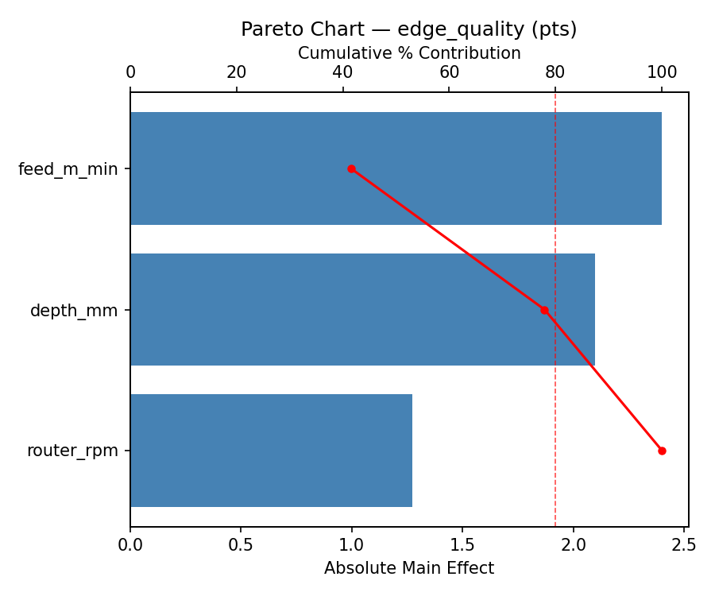
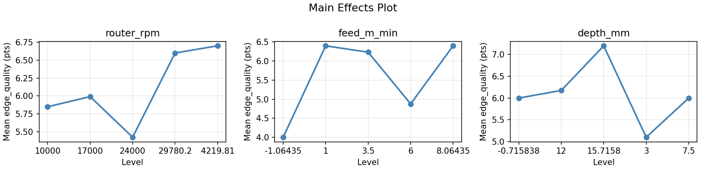
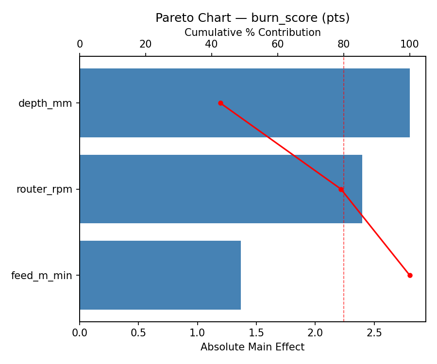
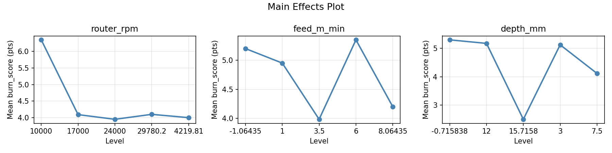
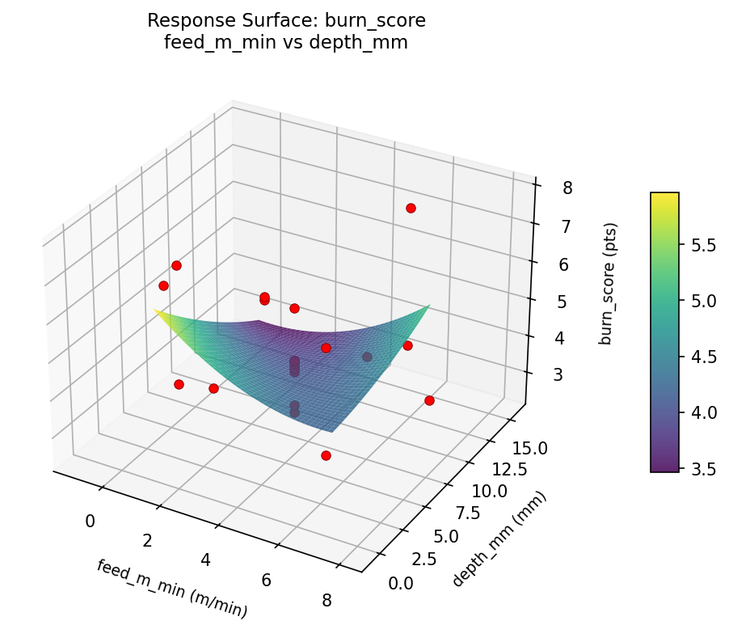
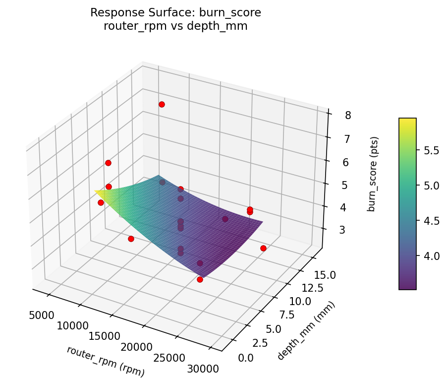
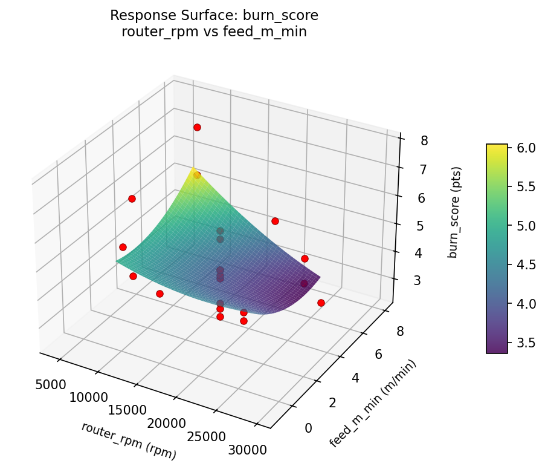
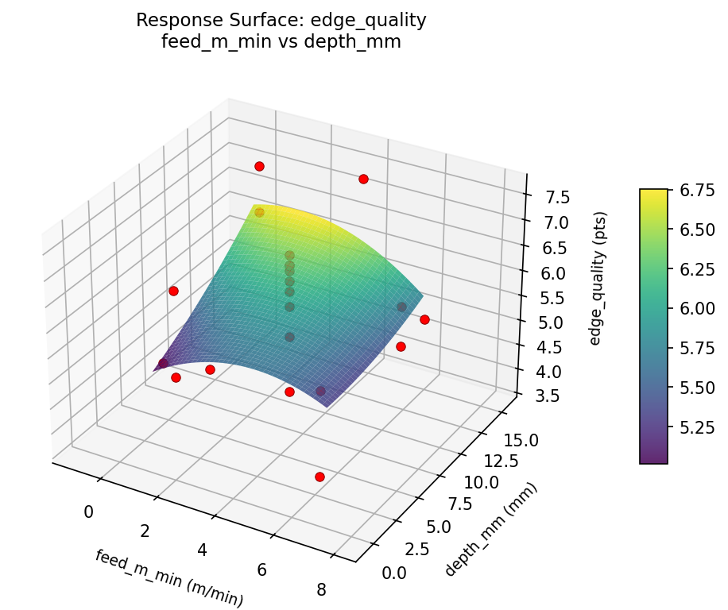
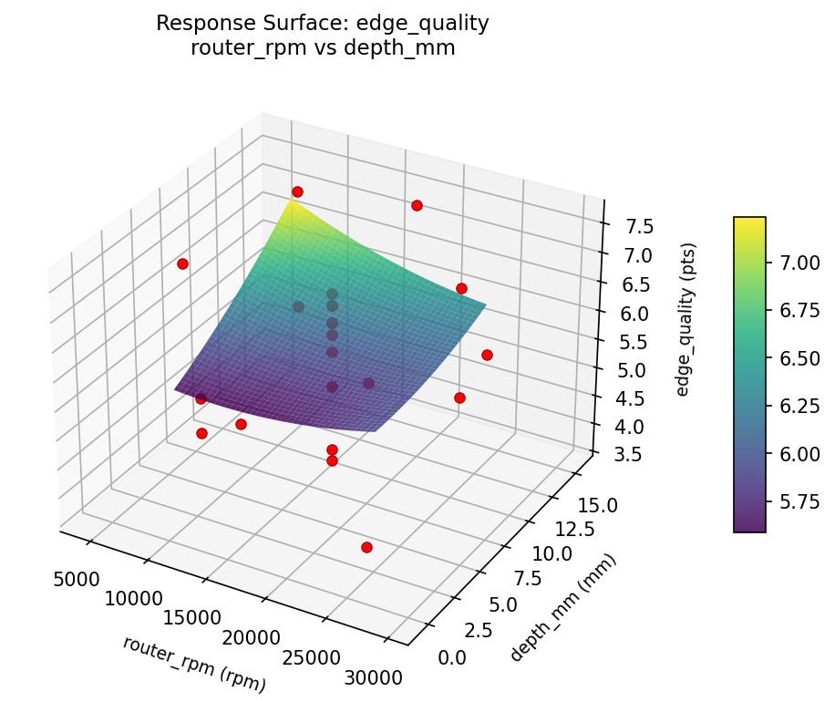
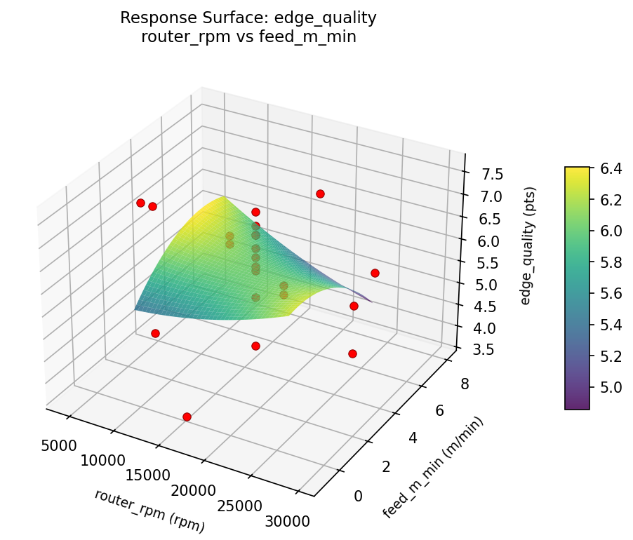

Experimental Setup
Factors
| Factor | Low | High | Unit |
|---|
router_rpm | 10000 | 24000 | rpm |
feed_m_min | 1 | 6 | m/min |
depth_mm | 3 | 12 | mm |
Fixed: bit_type = spiral_upcut, bit_diam = 12mm
Responses
| Response | Direction | Unit |
|---|
edge_quality | ↑ maximize | pts |
burn_score | ↓ minimize | pts |
Configuration
{
"metadata": {
"name": "Router Bit Speed & Feed",
"description": "Central composite design to maximize edge quality and minimize burning by tuning router RPM, feed rate, and depth of cut"
},
"factors": [
{
"name": "router_rpm",
"levels": [
"10000",
"24000"
],
"type": "continuous",
"unit": "rpm"
},
{
"name": "feed_m_min",
"levels": [
"1",
"6"
],
"type": "continuous",
"unit": "m/min"
},
{
"name": "depth_mm",
"levels": [
"3",
"12"
],
"type": "continuous",
"unit": "mm"
}
],
"fixed_factors": {
"bit_type": "spiral_upcut",
"bit_diam": "12mm"
},
"responses": [
{
"name": "edge_quality",
"optimize": "maximize",
"unit": "pts"
},
{
"name": "burn_score",
"optimize": "minimize",
"unit": "pts"
}
],
"settings": {
"operation": "central_composite",
"test_script": "use_cases/203_router_bit_speed/sim.sh"
}
}
Experimental Matrix
The Central Composite Design produces 22 runs. Each row is one experiment with specific factor settings.
| Run | router_rpm | feed_m_min | depth_mm |
|---|
| 1 | 17000 | 3.5 | 7.5 |
| 2 | 24000 | 1 | 12 |
| 3 | 10000 | 6 | 3 |
| 4 | 17000 | 8.06435 | 7.5 |
| 5 | 17000 | 3.5 | 7.5 |
| 6 | 4219.81 | 3.5 | 7.5 |
| 7 | 17000 | 3.5 | -0.715838 |
| 8 | 17000 | 3.5 | 7.5 |
| 9 | 24000 | 6 | 3 |
| 10 | 29780.2 | 3.5 | 7.5 |
| 11 | 17000 | 3.5 | 7.5 |
| 12 | 17000 | -1.06435 | 7.5 |
| 13 | 17000 | 3.5 | 7.5 |
| 14 | 10000 | 1 | 12 |
| 15 | 17000 | 3.5 | 7.5 |
| 16 | 24000 | 1 | 3 |
| 17 | 17000 | 3.5 | 15.7158 |
| 18 | 24000 | 6 | 12 |
| 19 | 17000 | 3.5 | 7.5 |
| 20 | 10000 | 1 | 3 |
| 21 | 10000 | 6 | 12 |
| 22 | 17000 | 3.5 | 7.5 |
Step-by-Step Workflow
1
Preview the design
$ python doe.py info --config use_cases/203_router_bit_speed/config.json
2
Generate the runner script
$ python doe.py generate --config use_cases/203_router_bit_speed/config.json \
--output use_cases/203_router_bit_speed/results/run.sh --seed 42
3
Execute the experiments
$ bash use_cases/203_router_bit_speed/results/run.sh
4
Analyze results
$ python doe.py analyze --config use_cases/203_router_bit_speed/config.json
5
Get optimization recommendations
$ python doe.py optimize --config use_cases/203_router_bit_speed/config.json
6
Generate the HTML report
$ python doe.py report --config use_cases/203_router_bit_speed/config.json \
--output use_cases/203_router_bit_speed/results/report.html
Features Exercised
| Feature | Value |
|---|
| Design type | central_composite |
| Factor types | continuous (all 3) |
| Arg style | double-dash |
| Responses | 2 (edge_quality ↑, burn_score ↓) |
| Total runs | 22 |
Analysis Results
Generated from actual experiment runs using the DOE Helper Tool.
Response: edge_quality
Top factors: feed_m_min (41.6%), depth_mm (36.4%), router_rpm (22.1%).
Pareto Chart

Main Effects Plot

Response: burn_score
Top factors: depth_mm (42.6%), router_rpm (36.5%), feed_m_min (20.8%).
Pareto Chart

Main Effects Plot

Response Surface Plots
3D surfaces fitted with quadratic RSM. Red dots are observed data points.
burn score feed m min vs depth mm

burn score router rpm vs depth mm

burn score router rpm vs feed m min

edge quality feed m min vs depth mm

edge quality router rpm vs depth mm

edge quality router rpm vs feed m min

Full Analysis Output
RSM surface: rsm_edge_quality_router_rpm_vs_feed_m_min.png
RSM surface: rsm_edge_quality_router_rpm_vs_depth_mm.png
RSM surface: rsm_edge_quality_feed_m_min_vs_depth_mm.png
RSM surface: rsm_burn_score_router_rpm_vs_feed_m_min.png
RSM surface: rsm_burn_score_router_rpm_vs_depth_mm.png
RSM surface: rsm_burn_score_feed_m_min_vs_depth_mm.png
=== Main Effects: edge_quality ===
Factor Effect Std Error % Contribution
--------------------------------------------------------------
feed_m_min 2.4000 0.2281 41.6%
depth_mm 2.1000 0.2281 36.4%
router_rpm 1.2750 0.2281 22.1%
=== Summary Statistics: edge_quality ===
router_rpm:
Level N Mean Std Min Max
------------------------------------------------------------
10000 4 5.8500 1.2152 4.8000 7.6000
17000 12 5.9917 1.0149 4.0000 7.2000
24000 4 5.4250 1.4315 3.7000 6.7000
29780.2 1 6.6000 0.0000 6.6000 6.6000
4219.81 1 6.7000 0.0000 6.7000 6.7000
feed_m_min:
Level N Mean Std Min Max
------------------------------------------------------------
-1.06435 1 4.0000 0.0000 4.0000 4.0000
1 4 6.4000 1.1690 4.8000 7.6000
3.5 12 6.2333 0.8184 4.2000 7.2000
6 4 4.8750 0.8539 3.7000 5.6000
8.06435 1 6.4000 0.0000 6.4000 6.4000
depth_mm:
Level N Mean Std Min Max
------------------------------------------------------------
-0.715838 1 6.0000 0.0000 6.0000 6.0000
12 4 6.1750 1.2285 4.8000 7.6000
15.7158 1 7.2000 0.0000 7.2000 7.2000
3 4 5.1000 1.1690 3.7000 6.5000
7.5 12 6.0000 0.9881 4.0000 6.9000
=== Main Effects: burn_score ===
Factor Effect Std Error % Contribution
--------------------------------------------------------------
depth_mm 2.8000 0.2748 42.6%
router_rpm 2.4000 0.2748 36.5%
feed_m_min 1.3667 0.2748 20.8%
=== Summary Statistics: burn_score ===
router_rpm:
Level N Mean Std Min Max
------------------------------------------------------------
10000 4 6.3500 1.4754 4.4000 7.8000
17000 12 4.0917 0.9746 2.5000 5.6000
24000 4 3.9500 0.4509 3.3000 4.3000
29780.2 1 4.1000 0.0000 4.1000 4.1000
4219.81 1 4.0000 0.0000 4.0000 4.0000
feed_m_min:
Level N Mean Std Min Max
------------------------------------------------------------
-1.06435 1 5.2000 0.0000 5.2000 5.2000
1 4 4.9500 1.4434 4.0000 7.1000
3.5 12 3.9833 0.9084 2.5000 5.6000
6 4 5.3500 2.0075 3.3000 7.8000
8.06435 1 4.2000 0.0000 4.2000 4.2000
depth_mm:
Level N Mean Std Min Max
------------------------------------------------------------
-0.715838 1 5.3000 0.0000 5.3000 5.3000
12 4 5.1750 1.7519 4.2000 7.8000
15.7158 1 2.5000 0.0000 2.5000 2.5000
3 4 5.1250 1.7746 3.3000 7.1000
7.5 12 4.1167 0.7661 2.8000 5.6000
Pareto chart (edge_quality): use_cases/203_router_bit_speed/results/analysis/pareto_edge_quality.png
Pareto chart (burn_score): use_cases/203_router_bit_speed/results/analysis/pareto_burn_score.png
Main effects (edge_quality): use_cases/203_router_bit_speed/results/analysis/main_effects_edge_quality.png
Main effects (burn_score): use_cases/203_router_bit_speed/results/analysis/main_effects_burn_score.png
Optimization Recommendations
=== Optimization: edge_quality ===
Direction: maximize
Best observed run: #9
router_rpm = 17000
feed_m_min = -1.06435
depth_mm = 7.5
Value: 7.6
RSM Model (linear, R² = 0.0279, Adj R² = -0.1341):
Coefficients:
intercept +5.9227
router_rpm -0.0794
feed_m_min -0.1986
depth_mm +0.0018
RSM Model (quadratic, R² = 0.2969, Adj R² = -0.2304):
Coefficients:
intercept +6.0490
router_rpm -0.0794
feed_m_min -0.1986
depth_mm +0.0018
router_rpm*feed_m_min +0.1000
router_rpm*depth_mm -0.7500
feed_m_min*depth_mm -0.3250
router_rpm^2 +0.0868
feed_m_min^2 -0.0932
depth_mm^2 -0.1832
Curvature analysis:
depth_mm coef=-0.1832 concave (has a maximum)
feed_m_min coef=-0.0932 negligible curvature
router_rpm coef=+0.0868 negligible curvature
Notable interactions:
router_rpm*depth_mm coef=-0.7500 (antagonistic)
feed_m_min*depth_mm coef=-0.3250 (antagonistic)
Predicted optimum (from linear model):
router_rpm = 17000
feed_m_min = -1.06435
depth_mm = 7.5
Predicted value: 6.2852
Model quality: Weak fit — consider adding center points or using a different design.
Factor importance:
1. feed_m_min (effect: 2.8, contribution: 51.1%)
2. router_rpm (effect: 1.5, contribution: 27.9%)
3. depth_mm (effect: 1.2, contribution: 21.0%)
=== Optimization: burn_score ===
Direction: minimize
Best observed run: #4
router_rpm = 17000
feed_m_min = 3.5
depth_mm = 7.5
Value: 2.5
RSM Model (linear, R² = 0.0494, Adj R² = -0.1090):
Coefficients:
intercept +4.4727
router_rpm +0.0113
feed_m_min +0.3361
depth_mm +0.0670
RSM Model (quadratic, R² = 0.5179, Adj R² = 0.1563):
Coefficients:
intercept +3.8806
router_rpm +0.0113
feed_m_min +0.3361
depth_mm +0.0670
router_rpm*feed_m_min -0.5750
router_rpm*depth_mm -0.6000
feed_m_min*depth_mm +0.6750
router_rpm^2 +0.0411
feed_m_min^2 +0.5361
depth_mm^2 +0.3111
Curvature analysis:
feed_m_min coef=+0.5361 convex (has a minimum)
depth_mm coef=+0.3111 convex (has a minimum)
router_rpm coef=+0.0411 negligible curvature
Notable interactions:
feed_m_min*depth_mm coef=+0.6750 (synergistic)
router_rpm*depth_mm coef=-0.6000 (antagonistic)
router_rpm*feed_m_min coef=-0.5750 (antagonistic)
Predicted optimum (from quadratic model):
router_rpm = 10000
feed_m_min = 6
depth_mm = 12
Predicted value: 7.0107
Model quality: Moderate fit — use predictions directionally, not precisely.
Factor importance:
1. feed_m_min (effect: 3.0, contribution: 50.6%)
2. depth_mm (effect: 2.2, contribution: 37.2%)
3. router_rpm (effect: 0.7, contribution: 12.3%)